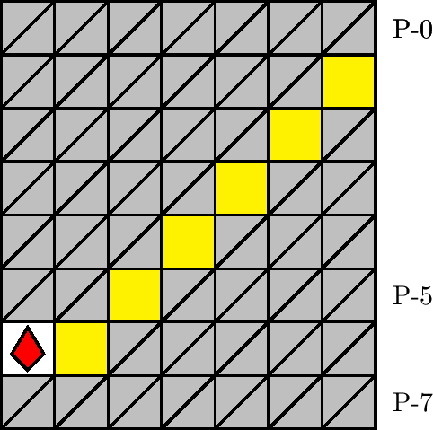
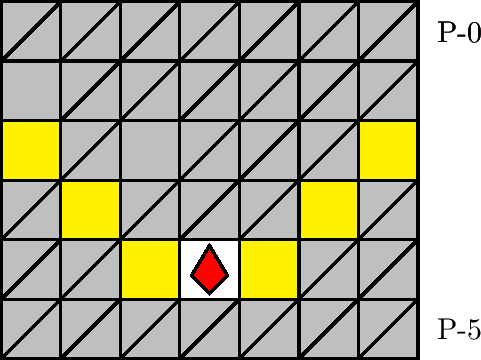
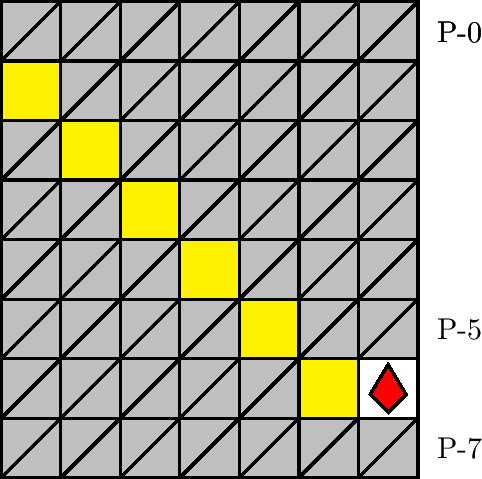

一般指針
エリア・階段



指針
階層を通して基本的に 0 列を潜行し， 17, 42, 67, 82 行目でエリアを同定します．その後は，各階段の別に応じて ±3 列または 0 列を潜行します．
解説
階段とは，図 3.2.15.1–3.2.15.3 のエリアを指します． 1100 m, 1200 m型の 21, 46, 71, 86 行目にそれぞれ確率で出現します． P-1 行目のブロックの有無および配列によって同定されます．各図の黄色マスは， 1100 m型の場合に壁， 1200 m型の場合に上針です．
一般に，各エリアは，犬が階層の 17, 42, 67, 82 行目にいるときに画面上で同定することができます． 階層の種類が判然としない状況または 1200 m型においては，上針による刺突を避けるために塊を乗り継いで潜行することが推奨されます． また，階段が出現する 1100 m型および 1200 m型はザクロが計 10 個出現するため，緩やかに潜行しても老衰のリスクが比較的高くありません． それぞれの詳細は「1100 m型指針」および「1200 m型指針」を参照してください．
注意: 左階段および右階段において，ザクロの直下に塊が出現することがあります．この場合，塊の破壊中に落下してきたブロックに圧迫される危険があります．これを避けるためにも，エリアの同定と ±3 列への移動は可能な限り早く行う必要があります．なお，圧迫の回避は，理論値的な吸引と潜行，またはバックジャンプによって可能な場合があります．バックジャンプについては [環25] を参照してください．
なお，中央階段の P-1 行目に壁ないし上針はありませんが，残り 2 つの階段の出現深度との整合を意図して，最上段の深度を P-2 行目としています．